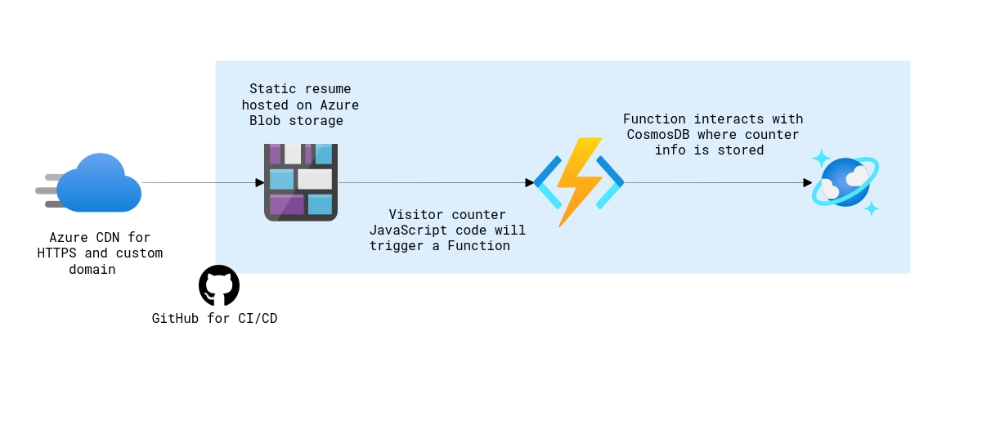

ABOUT ME
Hi, I'm James Barrineau, tech enthusiast and Application Analyst at SRHS.
I built this site as part of the Cloud Guru
Resume Challenge.
ABOUT THIS SITE
This site is a demonstration of Microsoft Azure Cloud Computing Services
The site is written with HTML, CSS, and Javascript
It is deployed as an Azure Static Web App and uses HTTPS for security
The site utilizes a custom DNS domain name and Azure CDN endpoint
Upon visiting the page, a Javascript call is made to an API which is served by an Azure
Function
On the HTTP Trigger, the Azure Function gets/sets the view count in a Cosmos DB
database
The Azure Function and unit tests are written in C# utilizing .NET Core 3.1
Github is used for version control and Github Actions are used for CI/CD
Github Actions are built so that any new site code is automatically tested, and successfully tested
code is automatically pushed to production
